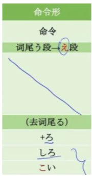

う段变え段

- 電気を消せ。
- 次の文章を読んで、質問（しつもん）に答（こた）えなさい。
- ここに車を止めるな。
- このマークは「タバコを吸うな」という意味です。
消す—>消せ
言う
助けて （たす）
| 命令/要求对方做某事 | 要求/命令对方不做某事 |
|---|---|
| 書いて | 書かないで |
| Vて＋ください 書いてください | Vない＋でください 書かないでください |
| V连用形+なさい 書きなさい | Vてはいけません 書いてはいけません |
| V命令形 書け | Vる＋な 書くな |
A：さっき部長は何と言いましたか。
B：「書類（しょるい）を早く提出（ていしゅつ）しろ」と言いました。
A：誠（まこと）、早くお風呂に入りなさい。
B：今宿題（しゅくだい）しているんだ。お母さん先に入ってよ。
A：すみません、これは何と読みますか。
B：【たちいりきんし（立入禁止）」と読みます。「ここに入るな」と言う意味ですよ。
A：この花の名前を知っていますか。
B：ええ、それはフジと言う花です。
あの日見た花の名前を僕達はまだ知らない 花名未闻
私は東京の世田谷（せたがや）と言う所に住んでいます。
田中と言う名前は日本人の名前です。
加藤：森君、次、歌いなさいよ。
戴：そう、そう。森さん、歌いなさい！
李：戴さん、自分より年上（としうえ）の森さんに「歌いなさい」と言うのは失礼ですよ。
加藤：そうだね。この場合（ばあい）は「歌ってください」と言う話ないよね。
戴：はい、わかりました。森さん、すみませんでした。
李：日本にいる時、日本人の男性が友達に、「来い」「遠慮（えんりょ）するな」などと言っているのをよく聞きました。これは親（した）しい人に使うんですね。
森：ええ。でも、女性はあまり使いません。「来てください」「遠慮しないでください」と言ったほうがいいですよ。
李：「ください」を取って、「来て」「遠慮しないで」などと言う言い方をしている女性もいました。
戴：そうですか。中国語でも親しい相手には、「来、来！」「别客气！」と言って「请」をつけませんから、同じですね。
李：そですね。それから、野球場で女の人が「頑張れ！」と言うのを聞きました。
森：危険（きけん）な時や丁寧（ていねい）に言う暇がない時は使ってもいいんです。